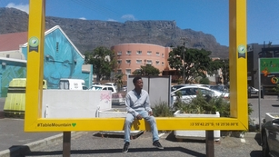

Lwando Mbokotho
Jozi

I would like to one day visit Johannesburg. I have always wondered how life would be in another province. The city of gold is South Africa's biggest city.It is also one the most exiting cities with fun things to do like bungee jumping off the soweto cooling towers, most celebritites reside in jozi.And also because one of my favourite music genres,kwaito music, a catchy genre of African house music that was born in the 90s and has become a South African phenomenon. It is most famous for its catchy lyrics that embody post-apartheid township culture. I want to experience a different cultural lifestyle .
A Foreign Language
I would like to learn how to speak greek. I believe that the greek language is an important language because it used alot in science and mathematics
Some greek phrases
| English | Greek |
|---|---|
| Hello | Χαίρετε(Chaírete) |
| How are you? | Πώς είσαι(Pós eísai) |
| Thank you very much | Ευχαριστώ πολύ (Efcharistó polý) |
Historical Places in Cape Town
The Castle of Good Hope built by the Dutch East India Company between 1666 and 1679, the Castle is the oldest existing colonial building in South Africa.It replaced an older fort called the Fort de Goede Hoop which was constructed from clay and timber and built by Jan van Riebeeck upon his arrival at the Cape of Good Hope in 1652.Two redoubts, Redoubt Kyckuit (Lookout) and Redoubt Duijnhoop (Duneheap) were built at the mouth of the Salt River in 1654.
The greenmarket Square was created in 1678 and it is the second oldest public site in Cape Town (after the Grand Parade). ... When Cape Town was granted its own municipal administration in 1840, the building became the first City Hall. The square itself was originally used as a slave market and as a market for fruit and vegetables.
The Slave Lodge is one of the oldest buildings in Cape Town. The many names of the building over three centuries – Slave Lodge, Government Offices Building, Old Supreme Court, and SA Cultural History Museum – reflect the long and rich history of the building.In 1998 this museum was renamed the Slave Lodge. Under the umbrella theme, ‘From human wrongs to human rights, exhibitions on the lower level of this museum explore the long history of slavery in South Africa. Through our changing, temporary exhibitions we address issues around and raise awareness of human rights